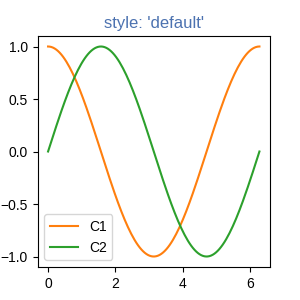
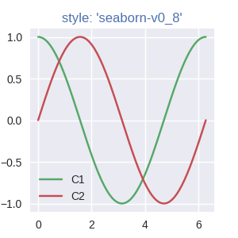

Note
Go to the end to download the full example code.
Specifying colors#
Color formats#
Matplotlib recognizes the following formats to specify a color.
Format |
Example |
|---|---|
RGB or RGBA (red, green, blue, alpha) tuple of float values in a closed interval [0, 1]. |
|
Case-insensitive hex RGB or RGBA string. |
|
Case-insensitive RGB or RGBA string equivalent hex shorthand of duplicated characters. |
|
String representation of float value
in closed interval |
|
Single character shorthand notation for some basic colors. Note The colors green, cyan, magenta, and yellow do not coincide with X11/CSS4 colors. Their particular shades were chosen for better visibility of colored lines against typical backgrounds. |
|
Case-insensitive X11/CSS4 color name with no spaces. |
|
Case-insensitive color name from
xkcd color survey with |
|
Case-insensitive Tableau Colors from 'T10' categorical palette. Note This is the default color cycle. |
|
"CN" color spec where Note Matplotlib indexes color at draw time and defaults to black if cycle does not include color. |
|
|
|
Tuple of one of the above color formats and an alpha float. Added in version 3.8. |
|
See also
- The following links provide more information on colors in Matplotlib.
Color Demo Example
List of named colors Example
"Red", "Green", and "Blue" are the intensities of those colors. In combination, they represent the colorspace.
Transparency#
The alpha value of a color specifies its transparency, where 0 is fully transparent and 1 is fully opaque. When a color is semi-transparent, the background color will show through.
The alpha value determines the resulting color by blending the foreground color with the background color according to the formula
The following plot illustrates the effect of transparency.
import matplotlib.pyplot as plt
import numpy as np
from matplotlib.patches import Rectangle
fig, ax = plt.subplots(figsize=(6.5, 1.65), layout='constrained')
ax.add_patch(Rectangle((-0.2, -0.35), 11.2, 0.7, color='C1', alpha=0.8))
for i, alpha in enumerate(np.linspace(0, 1, 11)):
ax.add_patch(Rectangle((i, 0.05), 0.8, 0.6, alpha=alpha, zorder=0))
ax.text(i+0.4, 0.85, f"{alpha:.1f}", ha='center')
ax.add_patch(Rectangle((i, -0.05), 0.8, -0.6, alpha=alpha, zorder=2))
ax.set_xlim(-0.2, 13)
ax.set_ylim(-1, 1)
ax.set_title('alpha values')
ax.text(11.3, 0.6, 'zorder=1', va='center', color='C0')
ax.text(11.3, 0, 'zorder=2\nalpha=0.8', va='center', color='C1')
ax.text(11.3, -0.6, 'zorder=3', va='center', color='C0')
ax.axis('off')
The orange rectangle is semi-transparent with alpha = 0.8. The top row of blue squares is drawn below and the bottom row of blue squares is drawn on top of the orange rectangle.
See also Zorder Demo to learn more on the drawing order.
"CN" color selection#
Matplotlib converts "CN" colors to RGBA when drawing Artists. The Styling with cycler section contains additional information about controlling colors and style properties.
import matplotlib.pyplot as plt
import numpy as np
import matplotlib as mpl
th = np.linspace(0, 2*np.pi, 128)
def demo(sty):
mpl.style.use(sty)
fig, ax = plt.subplots(figsize=(3, 3))
ax.set_title(f'style: {sty!r}', color='C0')
ax.plot(th, np.cos(th), 'C1', label='C1')
ax.plot(th, np.sin(th), 'C2', label='C2')
ax.legend()
demo('default')
demo('seaborn-v0_8')
- 
- 
The first color 'C0' is the title. Each plot uses the second and third
colors of each style's rcParams["axes.prop_cycle"] (default: cycler('color', ['#1f77b4', '#ff7f0e', '#2ca02c', '#d62728', '#9467bd', '#8c564b', '#e377c2', '#7f7f7f', '#bcbd22', '#17becf'])). They are 'C1' and 'C2',
respectively.
Comparison between X11/CSS4 and xkcd colors#
The xkcd colors come from a user survey conducted by the webcomic xkcd.
95 out of the 148 X11/CSS4 color names also appear in the xkcd color survey. Almost all of them map to different color values in the X11/CSS4 and in the xkcd palette. Only 'black', 'white' and 'cyan' are identical.
For example, 'blue' maps to '#0000FF' whereas 'xkcd:blue' maps to
'#0343DF'. Due to these name collisions, all xkcd colors have the
'xkcd:' prefix.
The visual below shows name collisions. Color names where color values agree are in bold.
import matplotlib.colors as mcolors
import matplotlib.patches as mpatch
overlap = {name for name in mcolors.CSS4_COLORS
if f'xkcd:{name}' in mcolors.XKCD_COLORS}
fig = plt.figure(figsize=[9, 5])
ax = fig.add_axes([0, 0, 1, 1])
n_groups = 3
n_rows = len(overlap) // n_groups + 1
for j, color_name in enumerate(sorted(overlap)):
css4 = mcolors.CSS4_COLORS[color_name]
xkcd = mcolors.XKCD_COLORS[f'xkcd:{color_name}'].upper()
# Pick text colour based on perceived luminance.
rgba = mcolors.to_rgba_array([css4, xkcd])
luma = 0.299 * rgba[:, 0] + 0.587 * rgba[:, 1] + 0.114 * rgba[:, 2]
css4_text_color = 'k' if luma[0] > 0.5 else 'w'
xkcd_text_color = 'k' if luma[1] > 0.5 else 'w'
col_shift = (j // n_rows) * 3
y_pos = j % n_rows
text_args = dict(fontsize=10, weight='bold' if css4 == xkcd else None)
ax.add_patch(mpatch.Rectangle((0 + col_shift, y_pos), 1, 1, color=css4))
ax.add_patch(mpatch.Rectangle((1 + col_shift, y_pos), 1, 1, color=xkcd))
ax.text(0.5 + col_shift, y_pos + .7, css4,
color=css4_text_color, ha='center', **text_args)
ax.text(1.5 + col_shift, y_pos + .7, xkcd,
color=xkcd_text_color, ha='center', **text_args)
ax.text(2 + col_shift, y_pos + .7, f' {color_name}', **text_args)
for g in range(n_groups):
ax.hlines(range(n_rows), 3*g, 3*g + 2.8, color='0.7', linewidth=1)
ax.text(0.5 + 3*g, -0.3, 'X11/CSS4', ha='center')
ax.text(1.5 + 3*g, -0.3, 'xkcd', ha='center')
ax.set_xlim(0, 3 * n_groups)
ax.set_ylim(n_rows, -1)
ax.axis('off')
plt.show()
Total running time of the script: (0 minutes 1.685 seconds)